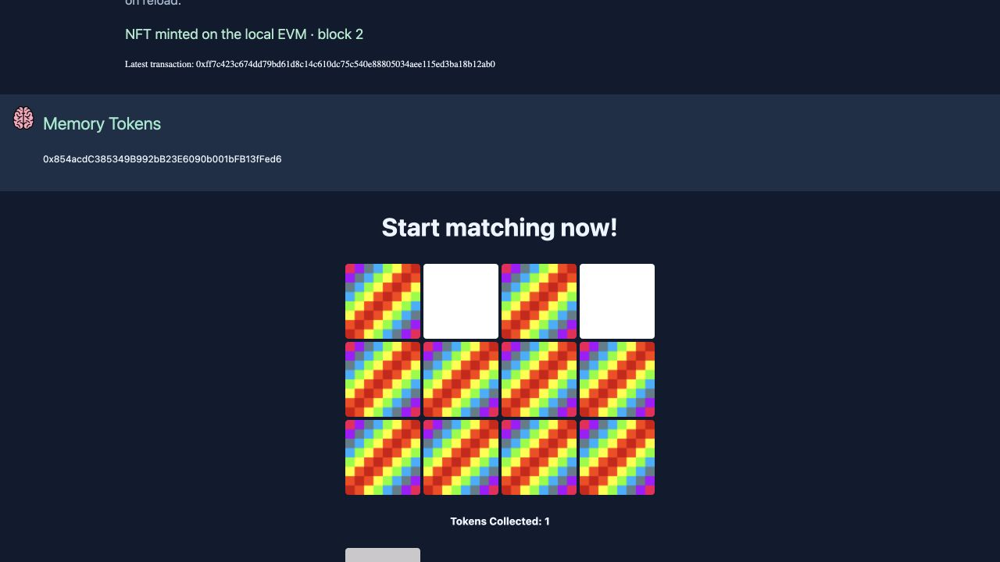

React · Solidity · Web3 · Ganache
Memory Tokens — Local Blockchain
Overview
Match cards to mint real ERC-721 tokens on a private blockchain running inside your browser.
The project connects an interactive game interface with a blockchain-related operation. Its overview separates the visible game or shop interaction from the underlying transaction system, so visitors can understand the purpose before opening the demo. Any published local-chain behavior is described as local; the project is not presented as a public marketplace or a financial product.
What it includes
- Interactive game interface
- Item or token interaction
- Blockchain integration
